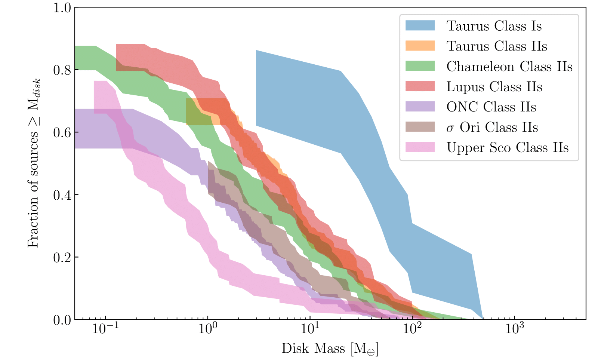
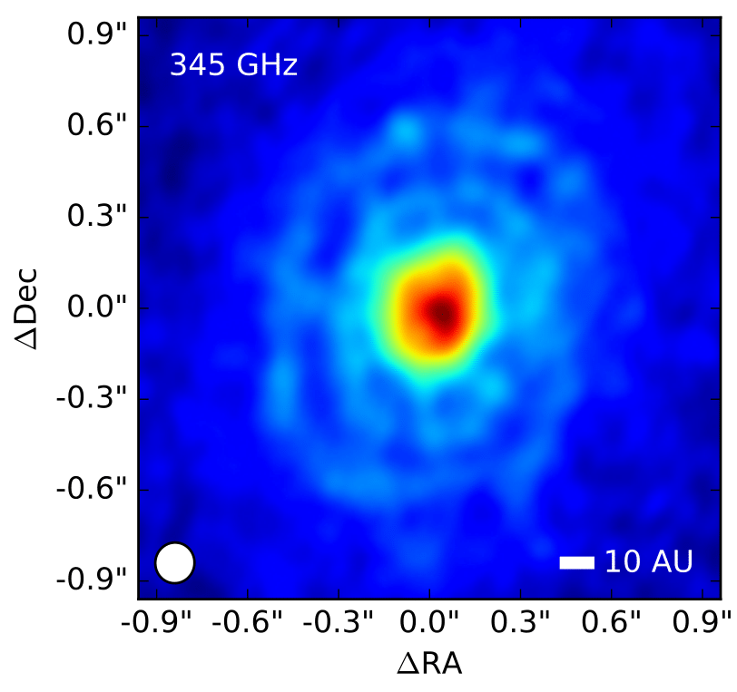
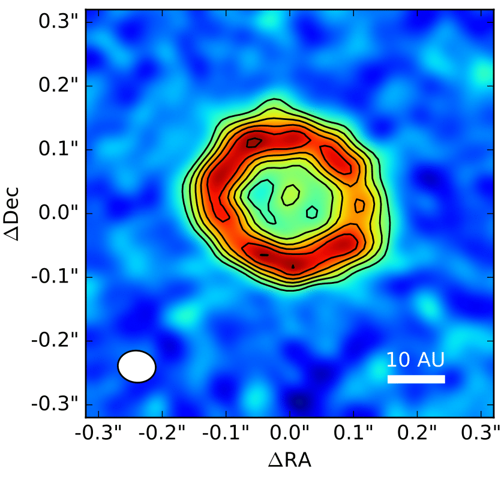
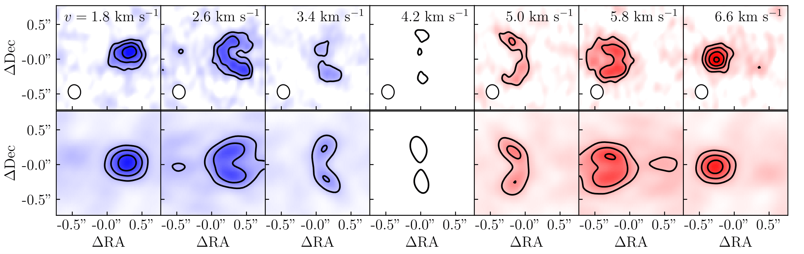
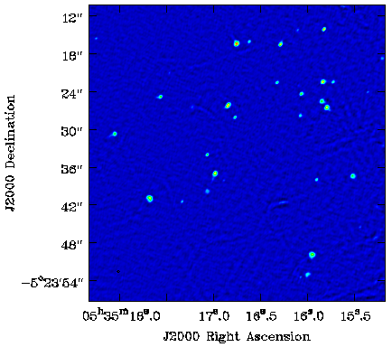

Patrick Sheehan
NSF Astronomy & Astrophysics Postdoctoral Fellow
Protostellar Disk Demographics

Substructures in Protostellar Disks
 
Dynamical Masses of Pre-main Sequence Stars

Free-free Emission from Young Stars
